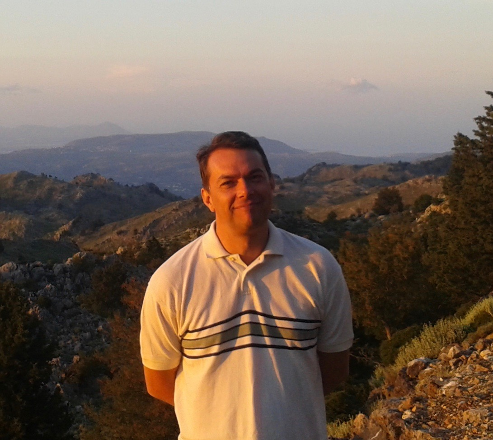

<title>David Lacoste</title>
<meta name="claude:viewport-fit-sides" content="cover">
<meta name="description" content="David Lacoste, CNRS researcher at Laboratoire Gulliver (ESPCI Paris). Stochastic thermodynamics, origin of life, chemical reaction networks and autocatalysis.">
<link rel="preconnect" href="https://fonts.googleapis.com">
<link rel="preconnect" href="https://fonts.gstatic.com" crossorigin>
<link rel="stylesheet" href="https://fonts.googleapis.com/css2?family=Newsreader:opsz,wght@6..72,400;6..72,500;6..72,600&family=IBM+Plex+Sans:wght@400;500;600&family=IBM+Plex+Mono:wght@400;500&display=swap">
<style>
/* Layout: sticky slim nav · two-column hero (text | portrait card) · numbered sections on a 1080px column · four-column footer. Dark-first, warm ink. */
:root {
  --bg: #13110e;
  --bg-raised: #1c1914;
  --line: #2e2a23;
  --fg: #ece6da;
  --muted: #a69d8d;
  --faint: #6f675a;
  --accent: #d6a24a;
  --accent-soft: rgba(214, 162, 74, 0.14);
  --display: "Newsreader", "Iowan Old Style", Georgia, serif;
  --body: "IBM Plex Sans", system-ui, -apple-system, "Segoe UI", sans-serif;
  --mono: "IBM Plex Mono", ui-monospace, "SFMono-Regular", Menlo, monospace;
  color-scheme: dark;
}
@media (prefers-color-scheme: light) {
  :root:not([data-theme="dark"]) {
    --bg: #f7f4ee; --bg-raised: #fffdf9; --line: #e2dccf; --fg: #1d1a15;
    --muted: #5d564a; --faint: #8f8676; --accent: #9a6a12; --accent-soft: rgba(154, 106, 18, 0.10);
    color-scheme: light;
  }
}
:root[data-theme="light"] {
  --bg: #f7f4ee; --bg-raised: #fffdf9; --line: #e2dccf; --fg: #1d1a15;
  --muted: #5d564a; --faint: #8f8676; --accent: #9a6a12; --accent-soft: rgba(154, 106, 18, 0.10);
  color-scheme: light;
}

* { box-sizing: border-box; }
html { scroll-behavior: smooth; }
@media (prefers-reduced-motion: reduce) { html { scroll-behavior: auto; } }
body {
  background: var(--bg); color: var(--fg);
  font-family: var(--body); font-size: 16px; line-height: 1.6;
  -webkit-font-smoothing: antialiased;
}
body::before { content: ""; position: fixed; inset: 0 0 auto; height: env(safe-area-inset-top, 0px); z-index: 10; background: var(--bg); }
a { color: inherit; text-decoration-color: var(--faint); text-underline-offset: 3px; }
a:hover { color: var(--accent); text-decoration-color: var(--accent); }
a:focus-visible, button:focus-visible { outline: 2px solid var(--accent); outline-offset: 3px; border-radius: 3px; }

.wrap {
  max-width: 1080px; margin: 0 auto;
  padding-left: max(16px, env(safe-area-inset-left, 0px));
  padding-right: max(16px, env(safe-area-inset-right, 0px));
}
@media (min-width: 720px) { .wrap { padding-left: max(32px, env(safe-area-inset-left, 0px)); padding-right: max(32px, env(safe-area-inset-right, 0px)); } }

/* ---------- Nav ---------- */
header.site {
  position: sticky; top: env(safe-area-inset-top, 0px); z-index: 5;
  background: color-mix(in srgb, var(--bg) 88%, transparent);
  backdrop-filter: blur(10px); -webkit-backdrop-filter: blur(10px);
  border-bottom: 1px solid var(--line);
}
header.site .wrap { display: flex; align-items: center; justify-content: space-between; gap: 16px; padding-block: 14px; }
.brand { display: flex; align-items: center; gap: 10px; text-decoration: none; font-weight: 500; white-space: nowrap; }
.brand .mono-badge {
  width: 30px; height: 30px; border-radius: 50%; display: grid; place-items: center;
  border: 1px solid var(--accent); color: var(--accent);
  font-family: var(--mono); font-size: 11px; letter-spacing: 0.04em;
}
nav.main { display: flex; gap: 4px 20px; flex-wrap: wrap; justify-content: flex-end; font-size: 14px; }
nav.main a { text-decoration: none; color: var(--muted); }
nav.main a:hover, nav.main a[aria-current] { color: var(--fg); }
@media (max-width: 760px) {
  header.site .wrap { flex-direction: column; align-items: flex-start; gap: 8px; }
  nav.main { justify-content: flex-start; gap: 4px 16px; }
}

/* ---------- Hero ---------- */
.hero { padding-block: 72px 64px; }
.hero .wrap { display: grid; grid-template-columns: minmax(0, 1fr) 300px; gap: 56px; align-items: center; }
.eyebrow a { color: inherit; text-decoration-color: var(--faint); text-decoration-thickness: 1px; }
.eyebrow a:hover { color: var(--fg); text-decoration-color: var(--fg); }
.eyebrow {
  font-family: var(--mono); font-size: 12px; text-transform: uppercase; letter-spacing: 0.12em; color: var(--accent);
  margin: 0 0 18px;
}
h1 {
  font-family: var(--display); font-weight: 500; font-size: clamp(38px, 5.6vw, 60px);
  line-height: 1.0; letter-spacing: -0.015em; margin: 0 0 22px; text-wrap: balance;
}
.lede { font-family: var(--display); font-size: clamp(20px, 2.4vw, 24px); line-height: 1.4; color: var(--fg); margin: 0 0 18px; max-width: 34ch; text-wrap: balance; }
.intro { color: var(--muted); max-width: 60ch; margin: 0 0 28px; }
.links { display: flex; flex-wrap: wrap; gap: 10px; }
.chip {
  display: inline-flex; align-items: center; gap: 8px; padding: 7px 14px; border-radius: 999px;
  border: 1px solid var(--line); font-size: 14px; text-decoration: none; color: var(--fg);
  transition: border-color .15s, background .15s;
}
.chip:hover { border-color: var(--accent); background: var(--accent-soft); color: var(--fg); }
.chip.primary { border-color: var(--accent); color: var(--accent); }
.chip svg { width: 14px; height: 14px; flex: none; }

.portrait { display: flex; flex-direction: column; gap: 14px; }
.photo {
  aspect-ratio: 4 / 5; max-width: 100%; border-radius: 6px; overflow: hidden; position: relative;
  background: var(--bg-raised); border: 1px solid var(--line);
}
.photo img { width: 100%; height: 100%; object-fit: cover; display: block; }
.photo .fallback {
  position: absolute; inset: 0; display: grid; place-items: center;
  font-family: var(--display); font-size: 88px; color: var(--accent); letter-spacing: -0.02em;
}
.photo .fallback[hidden] { display: none; }
.address { font-size: 13.5px; color: var(--muted); line-height: 1.55; }
.address strong { color: var(--fg); font-weight: 500; }
.address .email-row { display: flex; align-items: center; gap: 8px; flex-wrap: wrap; margin-top: 6px; }
.address code { font-family: var(--mono); font-size: 12.5px; color: var(--fg); }
.copy {
  font: inherit; font-size: 12px; font-family: var(--mono); color: var(--accent); background: none;
  border: 1px solid var(--line); border-radius: 4px; padding: 1px 8px; cursor: pointer;
}
.copy:hover { border-color: var(--accent); }

@media (max-width: 820px) {
  .hero { padding-block: 44px 40px; }
  .hero .wrap { grid-template-columns: 1fr; gap: 36px; }
  .portrait { flex-direction: row; align-items: flex-start; gap: 18px; }
  .photo { width: 132px; flex: none; }
  .photo .fallback { font-size: 44px; }
}

/* ---------- Sections ---------- */
section.block { border-top: 1px solid var(--line); padding-block: 64px; }
.sec-head { display: flex; align-items: baseline; justify-content: space-between; gap: 16px; margin-bottom: 32px; flex-wrap: wrap; }
h2 { font-family: var(--display); font-weight: 500; font-size: clamp(28px, 3.6vw, 38px); margin: 0; line-height: 1.1; display: flex; align-items: baseline; gap: 14px; }
h2 .n { font-family: var(--mono); font-size: 13px; color: var(--accent); letter-spacing: 0.06em; }
.more { font-size: 14px; color: var(--muted); text-decoration: none; white-space: nowrap; }
.more:hover { color: var(--accent); }
.more::after { content: " →"; }

/* Research cards */
.grid { display: grid; grid-template-columns: repeat(3, minmax(0, 1fr)); gap: 1px; background: var(--line); border: 1px solid var(--line); border-radius: 6px; overflow: hidden; }
@media (max-width: 900px) { .grid { grid-template-columns: repeat(2, minmax(0, 1fr)); } }
@media (max-width: 560px) { .grid { grid-template-columns: 1fr; } }
.card { background: var(--bg); padding: 26px 24px 24px; display: flex; flex-direction: column; gap: 10px; text-decoration: none; transition: background .15s; min-width: 0; }
.card:hover { background: var(--bg-raised); color: var(--fg); }
.card h3 { font-family: var(--display); font-weight: 500; font-size: 22px; line-height: 1.2; margin: 0; text-wrap: balance; }
.card p { margin: 0; color: var(--muted); font-size: 14.5px; }
.card .sub { margin-top: auto; padding-top: 8px; font-family: var(--mono); font-size: 11.5px; color: var(--faint); line-height: 1.7; }
.card[aria-expanded="true"] { background: var(--bg-raised); box-shadow: inset 0 -2px 0 var(--accent); }
.theme-panel { margin-top: 24px; border: 1px solid var(--line); border-radius: 6px; padding: 24px; background: var(--bg-raised); }
.panel-head { display: flex; align-items: baseline; justify-content: space-between; gap: 16px; margin-bottom: 8px; }
.panel-head h3 { font-family: var(--display); font-weight: 500; font-size: 24px; margin: 0; }
.theme-panel .pubs li:last-child { border-bottom: 0; padding-bottom: 0; }
.preprints { list-style: none; margin: auto 0 0; padding: 12px 0 0; border-top: 1px solid var(--line); display: grid; gap: 10px; }
.preprints a { font-family: var(--display); font-size: 17px; line-height: 1.3; text-decoration-color: var(--accent); }
.preprints span { display: block; font-family: var(--mono); font-size: 11.5px; color: var(--faint); margin-top: 3px; }
.card .tag { font-family: var(--mono); font-size: 11px; letter-spacing: 0.08em; text-transform: uppercase; color: var(--accent); }

/* Numbers */
.numbers { display: grid; grid-template-columns: repeat(4, minmax(0, 1fr)); gap: 24px; }
@media (max-width: 720px) { .numbers { grid-template-columns: repeat(2, minmax(0, 1fr)); } }
.num { border-left: 1px solid var(--line); padding-left: 18px; }
.num b { display: block; font-family: var(--display); font-weight: 400; font-size: clamp(44px, 6vw, 60px); line-height: 1; font-variant-numeric: tabular-nums; }
.num span { display: block; margin-top: 10px; font-size: 14px; color: var(--muted); }

/* News / opportunities */
.split { display: grid; grid-template-columns: minmax(0, 1.3fr) minmax(0, 1fr); gap: 48px; }
@media (max-width: 820px) { .split { grid-template-columns: 1fr; gap: 32px; } }
.callout { border: 1px solid var(--accent); background: var(--accent-soft); border-radius: 6px; padding: 24px; }
.callout h3 { font-family: var(--display); font-weight: 500; font-size: 24px; margin: 0 0 8px; }
.callout p { margin: 0 0 14px; color: var(--fg); }
.callout p:last-child { margin-bottom: 0; }
.list { list-style: none; margin: 0; padding: 0; }
.list li { display: grid; grid-template-columns: 92px minmax(0, 1fr); gap: 16px; padding-block: 16px; border-top: 1px solid var(--line); }
.list li:first-child { border-top: 0; padding-top: 0; }
.list .when { font-family: var(--mono); font-size: 12.5px; color: var(--accent); padding-top: 3px; font-variant-numeric: tabular-nums; }
.list p { margin: 0; }
.list .sm { color: var(--muted); font-size: 14.5px; margin-top: 2px; }

/* Publications */
.pubs { list-style: none; margin: 0; padding: 0; }
.pubs li { padding-block: 18px; border-top: 1px solid var(--line); display: grid; grid-template-columns: 64px minmax(0, 1fr); gap: 16px; }
.pubs li:last-child { border-bottom: 1px solid var(--line); }
.pubs .yr { font-family: var(--mono); font-size: 13px; color: var(--faint); padding-top: 4px; }
.pubs .t { font-family: var(--display); font-size: 20px; line-height: 1.3; margin: 0 0 4px; }
.pubs .t a { text-decoration: none; }
.pubs .a { color: var(--muted); font-size: 14px; margin: 0; }
.pubs .j { font-style: italic; }

/* People */
.people { display: grid; grid-template-columns: repeat(2, minmax(0, 1fr)); gap: 32px; }
@media (max-width: 560px) { .people { grid-template-columns: 1fr; } }
.people h3 { font-family: var(--mono); font-size: 12px; text-transform: uppercase; letter-spacing: 0.1em; color: var(--accent); font-weight: 500; margin: 0 0 12px; }
.people ul { list-style: none; margin: 0; padding: 0; }
.people li { padding-block: 9px; border-top: 1px solid var(--line); font-size: 15.5px; }

/* Footer */
footer.site { border-top: 1px solid var(--line); padding-block: 48px 40px; background: var(--bg-raised); }
.foot { display: grid; grid-template-columns: minmax(0, 1.6fr) repeat(3, minmax(0, 1fr)); gap: 32px; }
@media (max-width: 760px) { .foot { grid-template-columns: repeat(2, minmax(0, 1fr)); } .foot .about { grid-column: 1 / -1; } }
.foot h4 { font-family: var(--mono); font-size: 11.5px; text-transform: uppercase; letter-spacing: 0.1em; color: var(--faint); font-weight: 500; margin: 0 0 12px; }
.foot ul { list-style: none; margin: 0; padding: 0; display: grid; gap: 6px; font-size: 14.5px; }
.foot ul a { text-decoration: none; color: var(--muted); }
.foot ul a:hover { color: var(--accent); }
.foot .about p { margin: 0 0 8px; color: var(--muted); font-size: 14.5px; max-width: 40ch; }
.foot .about .name { font-family: var(--display); font-size: 22px; color: var(--fg); }
.legal { margin-top: 36px; padding-top: 20px; border-top: 1px solid var(--line); font-size: 13px; color: var(--faint); display: flex; justify-content: space-between; flex-wrap: wrap; gap: 8px; }
.legal .eq { font-family: var(--mono); }

/* Research pages */
.r-hero { padding-block: 64px 40px; }
.crumb { font-family: var(--mono); font-size: 12px; text-transform: uppercase; letter-spacing: 0.12em; color: var(--accent); margin: 0 0 18px; display: flex; gap: 10px; flex-wrap: wrap; }
.crumb a { text-decoration: none; color: var(--muted); }
.crumb a:hover { color: var(--accent); }
.r-hero h1 { font-size: clamp(38px, 6vw, 64px); max-width: 18ch; }
.r-hero .lede { max-width: 46ch; }
.r-keys { font-family: var(--mono); font-size: 12.5px; color: var(--faint); margin: 0; }
.prose { max-width: 68ch; display: grid; gap: 36px; }
.prose h2 { font-size: clamp(24px, 3vw, 30px); margin: 0 0 10px; }
.prose p { margin: 0; color: var(--muted); font-size: 17px; line-height: 1.7; }
.edit-note { font-family: var(--mono); font-size: 12px; color: var(--faint); border: 1px dashed var(--line); border-radius: 4px; padding: 8px 12px; max-width: 68ch; margin: 0 0 32px; }
.pub-group + .pub-group { margin-top: 40px; }
.pub-group h3 { font-family: var(--mono); font-size: 12px; text-transform: uppercase; letter-spacing: 0.1em; color: var(--accent); font-weight: 500; margin: 0 0 4px; }
.pubs .lk { display: flex; flex-wrap: wrap; gap: 6px 14px; margin-top: 6px; font-family: var(--mono); font-size: 12px; }
.pubs .lk a { color: var(--muted); }
.pubs .lk a:hover { color: var(--accent); }
.pager { display: grid; grid-template-columns: repeat(2, minmax(0, 1fr)); gap: 1px; background: var(--line); border: 1px solid var(--line); border-radius: 6px; overflow: hidden; }
.pager a { background: var(--bg); padding: 22px 24px; text-decoration: none; display: grid; gap: 6px; }
.pager a:hover { background: var(--bg-raised); color: var(--fg); }
.pager .dir { font-family: var(--mono); font-size: 11.5px; letter-spacing: 0.08em; text-transform: uppercase; color: var(--faint); }
.pager .nm { font-family: var(--display); font-size: 21px; line-height: 1.25; }
.pager .next { text-align: right; }
@media (max-width: 560px) { .pager { grid-template-columns: 1fr; } .pager .next { text-align: left; } }
</style>

<header class="site">
  <div class="wrap">
    <a class="brand" href="#top"><span class="mono-badge" aria-hidden="true">DL</span>David Lacoste</a>
    <nav class="main" aria-label="Main">
      <a href="#top" aria-current="page">Home</a>
      <a href="#research">Research</a>
      <a href="publications.html">Publications</a>
      <a href="teach.html">Teaching</a>
      <a href="talks.html">Talks</a>
      <a href="confs.html">Conferences</a>
      <a href="cveng1.pdf">CV</a>
    </nav>
  </div>
</header>

<main id="top">
  <section class="hero">
    <div class="wrap">
      <div>
        <p class="eyebrow">CNRS Researcher · <a href="http://www.gulliver.espci.fr/">Laboratoire Gulliver</a>, <a href="https://www.espci.psl.eu/">ESPCI Paris</a></p>
        <h1>David Lacoste</h1>
        <p class="lede">Theoretical physicist working on the statistical physics of living matter and on the emergence of life.</p>
        <p class="intro">My research spans stochastic thermodynamics, the origin of life, chemical reaction networks and autocatalysis, and the growth and fluctuations of cell populations. I work at <a href="http://www.gulliver.espci.fr/">Laboratoire Gulliver</a>, a joint CNRS–ESPCI unit in Paris.</p>
        <div class="links">
          <a class="chip primary" href="#news">Internship &amp; PhD openings</a>
          <a class="chip" href="http://scholar.google.com/citations?user=sPVpEycAAAAJ&amp;hl=en">Google Scholar</a>
          <a class="chip" href="http://orcid.org/0000-0002-5735-4657">ORCID</a>
          <a class="chip" href="https://twitter.com/lacostedavid2">Twitter / X</a>
          <a class="chip" href="cveng1.pdf">CV (PDF)</a>
        </div>
      </div>

      <aside class="portrait" aria-label="Contact">
        <div class="photo">
          
          <div class="fallback" id="ph-fb" hidden aria-hidden="true">DL</div>
        </div>
        <div class="address">
          <strong>Office B135, old building</strong><br>
          Laboratoire Gulliver, ESPCI<br>
          10 rue Vauquelin, 75231 Paris cedex 05, France
          <div class="email-row">
            <code id="email">david.lacoste@espci.fr</code>
            <button class="copy" id="copy-email" type="button">Copy</button>
          </div>
          <div style="margin-top:4px">Phone: please call my mobile or email.</div>
        </div>
      </aside>
    </div>
  </section>

  <section class="block" id="research">
    <div class="wrap">
      <div class="sec-head">
        <h2><span class="n">01</span>Research themes</h2>
        <a class="more" href="publications.html">All publications</a>
      </div>
      <div class="grid">
        <a class="card" href="research-origin-of-life.html">
          <span class="tag">Current</span>
          <h3>Origin of life</h3>
          <p>How self-replicating molecules survive, select and organise: transient compartments, autocatalytic networks and the emergence of homochirality.</p>
          <div class="sub">Transient compartmentalization · Autocatalysis · Homochirality</div>
        </a>
        <a class="card" href="research-cell-populations.html">
          <span class="tag">Current</span>
          <h3>Fluctuations and growth in cell populations</h3>
          <p>Lineage statistics, bacterial response to antibiotics, and growth strategies such as phenotypic switching in uncertain environments.</p>
          <div class="sub">Antibiotics · Lineage trees · Bet hedging</div>
        </a>
        <a class="card" href="research-stochastic-thermodynamics.html">
          <span class="tag">Current</span>
          <h3>Stochastic thermodynamics</h3>
          <p>Fluctuation relations, thermodynamic inference and the trade-offs between power, precision and efficiency in small out-of-equilibrium systems.</p>
          <div class="sub">Trade-offs · Inference · Fluctuation theorems · Molecular motors</div>
        </a>
        <a class="card" href="research-economic-growth.html">
          <span class="tag">Current</span>
          <h3>Limits to economic growth</h3>
          <p>Tools from reaction networks and stochastic dynamics applied to the economy: how debt-financed growth locks in carbon emissions, and what constrains growth in a finite world.</p>
          <div class="sub">Debt and carbon lock-in · Growth vs. risk · Economic principles in biology</div>
        </a>
        <a class="card" href="research-soft-biological-matter.html">
          <h3>Soft biological matter</h3>
          <p>Non-equilibrium self-assembly of actin filaments and microtubules, and the physics of lipid membranes: active membranes with ion pumps, membranes in electric fields, coupling to the cytoskeleton and protein mobility.</p>
          <div class="sub">Biofilaments · Active membranes · Electrokinetics · Protein diffusion</div>
        </a>
        <a class="card" href="research-soft-matter-optics.html">
          <h3>Soft matter and multiple light scattering</h3>
          <p>Magnetic colloids, liquid crystals, and the optics of diffuse light in magneto-optical and chiral media, including the photonic Hall effect.</p>
          <div class="sub">Colloids · Liquid crystals · Magneto-optics</div>
        </a>
      </div>
    </div>
  </section>

  <section class="block" id="news">
    <div class="wrap">
      <div class="sec-head">
        <h2><span class="n">02</span>What's new</h2>
        <a class="more" href="https://twitter.com/lacostedavid2">More on Twitter / X</a>
      </div>
      <div class="split">
        <ul class="list">
          <li>
            <span class="when">Sep 2026</span>
            <div>
              <p>Workshop on the origin of life and chemical reaction networks, Munich.</p>
              <p class="sm"><a href="https://www.munich-iapbp.de/chemical-reaction-networks">Workshop page</a></p>
            </div>
          </li>
          <li>
            <span class="when">May 2026</span>
            <div>
              <p>Workshop on patterning principles in biophysics, Beg Rohu.</p>
              <p class="sm"><a href="https://biopatterning.sciencesconf.org/?lang=en">Workshop page</a></p>
            </div>
          </li>
          <li>
            <span class="when">2026</span>
            <div>
              <p>Compositional memory matters for early molecular systems, <i>PNAS</i>.</p>
              <p class="sm"><a href="https://www.u-tokyo.ac.jp/focus/en/press/z0508_00210.html">Press release from the University of Tokyo</a></p>
            </div>
          </li>
          <li>
            <span class="when">Nov 2024</span>
            <div>
              <p>Armand Despons defended his PhD, “Physical aspects of autocatalysis”.</p>
            </div>
          </li>
        </ul>
        <div class="callout">
          <h3>Internship and PhD openings</h3>
          <p>Internship and PhD projects are available, with funding through the Ecole Doctorale EDPIF.</p>
          <p>Please contact me directly for details at <code style="font-family:var(--mono);font-size:14px">david.lacoste@espci.fr</code>.</p>
        </div>
      </div>
    </div>
  </section>

  <section class="block" id="selected">
    <div class="wrap">
      <div class="sec-head">
        <h2><span class="n">03</span>Recent publications</h2>
        <a class="more" href="publications.html">All publications</a>
      </div>
      <ul class="pubs">
        <li>
          <span class="yr">2025</span>
          <div>
            <p class="t"><a href="https://arxiv.org/abs/2512.05063">Debt, growth, and the carbon lock-in</a></p>
            <p class="a">S. Montagnani, B. Ledoux, D. Lacoste · <span class="j">Preprint</span>, arXiv 2512.05063</p>
          </div>
        </li>
        <li>
          <span class="yr">2026</span>
          <div>
            <p class="t"><a href="https://www.pnas.org/doi/10.1073/pnas.2537522123">Compositional memory matters for early molecular systems</a></p>
            <p class="a">B. Ledoux, R. Kuwabara, N. Ichihashi, R. Mizuuchi, D. Lacoste · <span class="j">PNAS</span> 123, e2537522123</p>
          </div>
        </li>
        <li>
          <span class="yr">2026</span>
          <div>
            <p class="t"><a href="https://journals.aps.org/pre/abstract/10.1103/hg5y-tqvt">Growth bistability in small bacterial populations exposed to antibiotics</a></p>
            <p class="a">B. Ledoux, D. Lacoste · <span class="j">Phys. Rev. E</span> 114, 034411</p>
          </div>
        </li>
        <li>
          <span class="yr">2025</span>
          <div>
            <p class="t"><a href="https://zenodo.org/records/15397884">Universal features of autocatalytic systems</a></p>
            <p class="a">D. Lacoste, B. Ledoux · Chapter in <span class="j">Economic principles in cell biology</span></p>
          </div>
        </li>
        <li>
          <span class="yr">2025</span>
          <div>
            <p class="t"><a href="https://dlacoste22.github.io/publis/physica_A.pdf">The trade-off between growth and risk in Kelly's gambling and beyond</a></p>
            <p class="a">S. Cavallero, A. Rousselot, R. Pugatch, L. Dinis, D. Lacoste · <span class="j">Physica A</span> 659, 130316</p>
          </div>
        </li>
        <li>
          <span class="yr">2024</span>
          <div>
            <p class="t"><a href="https://rdcu.be/dNfbU">Structural constraints limit the regime of optimal flux in autocatalytic reaction networks</a></p>
            <p class="a">A. Despons, Y. De Decker, D. Lacoste · <span class="j">Commun. Phys.</span> 7, 224</p>
          </div>
        </li>
      </ul>
    </div>
  </section>

  <section class="block" id="people">
    <div class="wrap">
      <div class="sec-head">
        <h2><span class="n">04</span>Former group members in academia</h2>
      </div>
      <div class="people">
        <div>
          <h3>PhD students</h3>
          <ul>
            <li>Armand Despons</li>
            <li><a href="https://arthur-genthon.github.io/fr/">Arthur Genthon</a></li>
            <li>Gabin Laurent</li>
            <li>Alex Blokhuis</li>
            <li><a href="https://gatienverley.blogspot.com/p/home.html">Gatien Verley</a></li>
          </ul>
        </div>
        <div>
          <h3>Postdocs</h3>
          <ul>
            <li><a href="http://sourabhlahiri.yolasite.com/">Sourabh Lahiri</a></li>
            <li><a href="https://loop.frontiersin.org/people/1406509/overview">Reinaldo Garcia Garcia</a></li>
            <li><a href="https://www.thphys.uni-heidelberg.de/~biophys/index.php?lang=e&amp;n1=ziebert">Falko Ziebert</a></li>
            <li><a href="https://www.bio.iitb.ac.in/~ranjith/">Ranjith Padinhateeri</a></li>
            <li><a href="https://www.icts.res.in/people/anupam-kundu">Anupam Kundu</a></li>
          </ul>
        </div>
      </div>
    </div>
  </section>
</main>

<footer class="site">
  <div class="wrap">
    <div class="foot">
      <div class="about">
        <p class="name">David Lacoste</p>
        <p>Statistical physics of living and pre-living matter. CNRS researcher at Laboratoire Gulliver, ESPCI Paris.</p>
        <p><code style="font-family:var(--mono);font-size:13px;color:var(--fg)">david.lacoste@espci.fr</code></p>
      </div>
      <div>
        <h4>Site</h4>
        <ul>
          <li><a href="#research">Research</a></li>
          <li><a href="publications.html">Publications</a></li>
          <li><a href="teach.html">Teaching</a></li>
          <li><a href="cveng1.pdf">CV</a></li>
        </ul>
      </div>
      <div>
        <h4>Events</h4>
        <ul>
          <li><a href="talks.html">Recorded talks</a></li>
          <li><a href="confs.html">Conferences</a></li>
        </ul>
      </div>
      <div>
        <h4>Profiles</h4>
        <ul>
          <li><a href="http://scholar.google.com/citations?user=sPVpEycAAAAJ&amp;hl=en">Google Scholar</a></li>
          <li><a href="http://orcid.org/0000-0002-5735-4657">ORCID</a></li>
          <li><a href="https://twitter.com/lacostedavid2">Twitter / X</a></li>
          <li><a href="http://www.gulliver.espci.fr/">Gulliver lab</a></li>
        </ul>
      </div>
    </div>
    <div class="legal">
      <span>© David Lacoste · Paris, France</span>
      <span class="eq">A + X → 2X</span>
    </div>
  </div>
</footer>

<script>
(function () {
  var btn = document.getElementById('copy-email');
  var el = document.getElementById('email');
  if (!btn || !el) return;
  btn.addEventListener('click', function () {
    var text = el.textContent.trim();
    function selectIt() {
      var r = document.createRange(); r.selectNodeContents(el);
      var s = window.getSelection(); s.removeAllRanges(); s.addRange(r);
    }
    try {
      navigator.clipboard.writeText(text).then(function () {
        btn.textContent = 'Copied';
        setTimeout(function () { btn.textContent = 'Copy'; }, 1600);
      }, selectIt);
    } catch (e) { selectIt(); }
  });
})();
</script>
